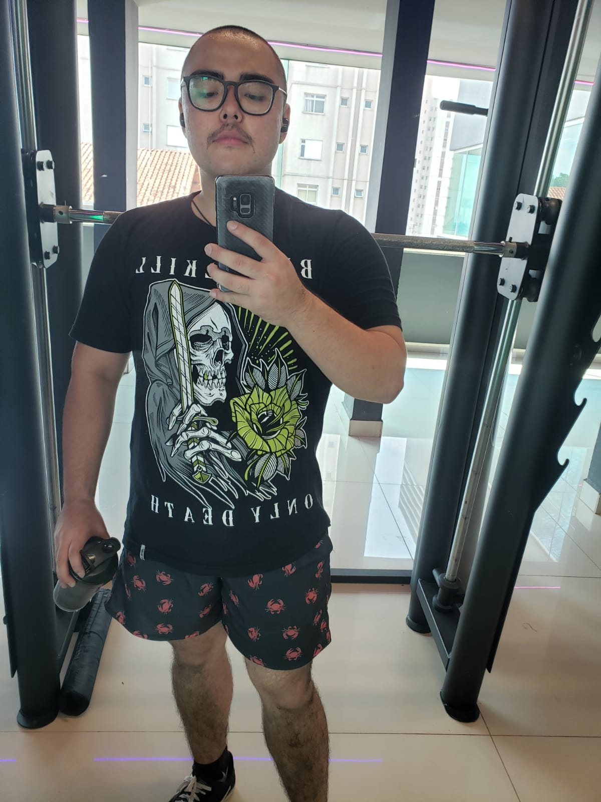

Este portfólio será desenvolvido ao longo do curso na Trybe, com exceção da configuração da fonte, inicialmente usarei somente HTML.
Página que eu gosto
Moro em Campo Grande/MS,tenho 25 anos e sou estudante de Administração pela UFMS, estagiei na CONAB na área de adminsitração, e posteriormente
atuei na área financeira de uma empresa de desenvolvimento de sites de licitação.
Com o envolvimento constante com a tecnologia, comecei a ter um interesse, e por fim, estou em transição de carreira.